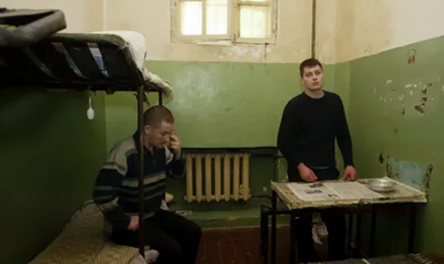
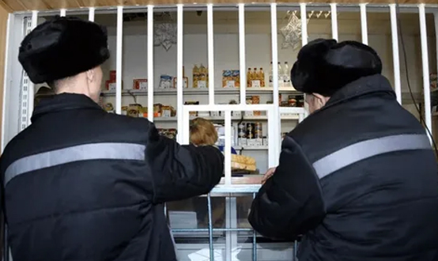

Общая характеристика преступлений против собственности
Преступления против собственности собраны в главе 21 УК РФ.
Видовым объектом преступлений против собственности являются отношения собственности, а именно установленные законом право частной, государственной, муниципальной и иных форм собственности.
ЦИТАТА
Право собственности включает в себя правомочия по владению, пользованию и распоряжению тем или иным имуществом.
Непосредственным объектом рассматриваемой группы преступлений являются отношения конкретной формы собственности (частной, государственной, муниципальной и др.). Некоторые преступления против собственности (например, разбой – ст. 162 УК) имеют основной (право собственности) и дополнительный объекты (здоровье личности).
Предмет является обязательным элементом преступлений против собственности, им может являться движимое и недвижимое имущество, а также ценные бумаги.
С объективной стороны преступления против собственности характеризуются в основном совершением активных действий (ст. 165 УК — причинение имущественного ущерба путем обмана или злоупотребления доверием и ст. 168 — неосторожное уничтожение или повреждение чужого имущества возможны в форме бездействия).
По конструкции составы рассматриваемых посягательств в большинстве своем материальные, т.е. причинение имущественного ущерба является условием законченности преступления (ст. 162 УК – разбой, ст. 163 УК – вымогательство и ст. 166 УК – неправомерное завладение автомобилем или иным транспортным средством без цели хищения подразумевают формальный состав).
Способ совершения преступления в некоторых составах принципиален (например, кража — тайный способ; мошенничества — способ обмана или злоупотребления доверием).
С субъективной стороны все преступления против собственности (кроме неосторожного уничтожения или повреждения чужого имущества) характеризуются умышленной виной. Субъективная сторона умышленного уничтожения или повреждения чужого имущества, повлекшего смерть человека или иные тяжкие последствия (ч. 2 ст. 164 УК), характеризуется двумя формами вины. Для ряда посягательств обязательно наличие корыстной цели (например, для всех хищений).
Субъектами преступлений являются физические вменяемые лица: достигшие либо 14 лет (кража, грабеж, разбой, вымогательство, неправомерное завладение автомобилем или иным транспортным средством без цели хищения, умышленное уничтожение или повреждение чужого имущества при отягчающих обстоятельствах) либо 16 лет (иные преступления против собственности).
Преступления против собственности можно разделить на следующие группы:
1) хищения – ст. 158, 159, 159.1., 159.2., 159.3., 159.5., 159.6., 160, 161, 162, 164 УК;
2) корыстные преступления против собственности, не связанные с хищением, – ст. 163, 165, 166 УК;
3) некорыстные посягательства на собственность – ст.167, 168 УК.
Хищения
Под хищением понимаются совершенные с корыстной целью противоправные безвозмездное изъятие и (или) обращение чужого имущества в пользу виновного или других лиц, причинивших ущерб собственнику или иному владельцу этого имущества.
Объектом хищения выступают отношения собственности независимо от ее формы. Предмет хищения — конкретное имущество, движимое или недвижимое, деньги, ценные бумаги, которые изымаются виновным и (или) обращаются им в свою пользу или пользу других лиц и являются для последнего чужим, т.е. не находятся в его собственности или ином законном владении.
Объективная сторона хищения характеризуется совершением противоправного безвозмездного изъятия и (или) обращения чужого имущества в пользу виновного или других лиц. Изъятие представляет собой обособление виновным определенной части чужого имущества и отторжение ее от общей имущественной массы, принадлежащей собственнику или законному владельцу. Обращением имущества в пользу виновного или иных лиц – это установление фактического господства над вещью, противоправное приобретение правомочий собственника.
С субъективной стороны хищение характеризуется виной в виде прямого умысла, т.е. виновный сознает, что изымает и (или) обращает в свою пользу или пользу других лиц определенным способом чужое имущество, не имея на последнее никакого права, предвидит причинение собственнику или иному владельцу имущественного ущерба и желает этого. Обязательным признаком субъективной стороны хищения является также наличие у виновного корыстной цели, т.е. стремление извлечь незаконную выгоду материального характера за счет чужого имущества.
Субъект хищения — физическое вменяемое лицо, достигшее установленного законом возраста уголовной ответственности: при совершении кражи, грабежа, разбоя —14 лет; мошенничества, присвоения, растраты, хищения предметов, имеющих особую ценность, — 16 лет. Субъект присвоения и растраты специальный — лицо, которому похищенное чужое имущество было вверено.
1) Кража – ст. 158 УК. Объективная сторона кражи состоит в тайном хищении чужого имущества. Хищение признается тайным, когда совершено в отсутствие собственника, а также других лиц (например, вор проникает ночью в запертый подвал и незаметно скрывается с похищенным); в присутствии собственника, но незаметно для него (например, вор-карманник крадет кошелек у потерпевшего в автобусе); в присутствии очевидцев, наблюдающих за виновным, но не осознающих противоправности его действий (например, вор в присутствии прохожих садится на чужой велосипед и уезжает); в присутствии лиц, заведомо для виновного не способных осознавать происходящее (спящих, сильно пьяных, малолетних и др.); в присутствии лиц, наблюдающих за действиями виновного, осознающих противоправный характер его действий, но не дающих знать о своем присутствии, в связи с чем виновный полагает, что действует тайно (например, охранник наблюдает за вором через камеру видеонаблюдения, пока тот совершает хищение).
Возможна ситуация, когда кража становится явной для собственника или других лиц: если виновный при этом прекращает совершение хищения, его действия квалифицируются как покушение на кражу; если же продолжает – он совершает уже грабеж (открытое хищение чужого имущества). Применение при этом виновным насилия с целью завершения незаконного изъятия похищенного превращает кражу либо в насильственный грабеж, либо в разбой в зависимости от характера и интенсивности применяемого насилия.
Субъективная сторона кражи характеризуется прямым умыслом и корыстной целью. Субъект — физическое вменяемое лицо, достигшее 14-летнего возраста.
Квалифицированными видами кражи являются: кража группой лиц по предварительному сговору; с незаконным проникновением в жилище, помещение либо иное хранилище; с причинением значительного ущерба гражданину (не менее 5000 руб.); в крупном размере (более 250 тыс. руб.).
2) Мелкое хищение, совершенное лицом, подвергнутым административному наказанию – ст. 158.1. Ключевые признаки деяния: а) мелкий размер хищения (по ст. 7.27 КоАП РФ, мелкое хищение – завладение чужим имуществом стоимостью до 2500 руб. путем кражи, мошенничества, присвоения или растраты); б) повторность (уголовное наказание назначается только в случае, если лицо повторно совершает мелкое хищение, будучи уже привлекаемым за подобное деяние в административном порядке). Субъективная сторона характеризуется виной в виде прямого умысла и корыстной целью. Субъект — физическое вменяемое лицо, достигшее 16 лет.
3) Мошенничество – ст. 159 УК. Объективная сторона мошенничества состоит в хищении чужого имущества или приобретении права на чужое имущество путем обмана или злоупотребления доверием. Обман представляет собой сознательное введение кого-либо в заблуждение (путем предоставления подложных документов, обещаний и т.п.). При злоупотреблении доверием мошенник использует доверительные отношения с потерпевшим для совершения хищения (например, завладевает и продает имущество родственника, обещая его вернуть). Мошенничество не сопряжено с насилием: потерпевший, будучи введен в заблуждение в результате обмана или доверяя виновному, добровольно передает ему имущество либо право на него, полагая, что последний имеет на это законное основание. Субъективная сторона мошенничества — вина в виде прямого умысла и корыстная цель. Субъект — физическое вменяемое лицо, достигшее 16-летнего возраста (квалифицирующим признаком является совершение мошенничества специальным субъектом – должностным лицом с использованием служебного положения).
Отдельными статьями урегулированы виды мошенничества со специфическими объектами: мошенничество в сфере кредитования – ст. 159.1., мошенничество при получении выплат – ст. 159.2., мошенничество с использованием электронных средств платежа – ст. 159.3., мошенничество в сфере страхования – ст. 159.5., мошенничество в сфере компьютерной информации – ст. 159.6.
4) Присвоение или растрата – ст. 160 УК. Присвоение представляет собой обособление части имущества, вверенного виновному, изъятие и безвозмездное обращение его последним в свою пользу. Растрата — это изъятие части имущества, вверенного виновному, и безвозмездное обращение его в пользу других лиц или потребление, расходование самим виновным. Субъективная сторона — умышленная вина в виде прямого умысла и корыстная цель. Субъект — физическое вменяемое лицо, достигшее 16 лет, которому вверено похищенное имущество (должностные лица, стороны в гражданских договорах и др.).
5) Грабеж – ст. 161 УК. Ключевые признаки грабежа: а) открытое хищение чужого имущества (отличие от кражи); б) может быть совершен с применением насилия (отличие от кражи), но не опасного для жизни или здоровья (отличие от разбоя), либо с угрозой применения такого насилия. Открытый способ хищения означает, что виновный изымает чужое имущество, осознавая, что его действия и их преступный характер очевидны для собственника, иного владельца или других лиц, но игнорирует это обстоятельство и совершает посягательство. Субъективная сторона характеризуется виной в виде прямого умысла и корыстной целью. Субъект — физическое вменяемое лицо, достигшее 14 лет.
6) Разбой – ст. 162 УК. Ключевые признаки разбоя: а) отрытое нападение в целях хищения чужого имущества (отличие от кражи); б) совершенное с применением насилия, опасного для жизни или здоровья, либо с угрозой применения такого насилия (отличие от разбоя). Объекты преступления: основной — отношения определенной формы собственности; дополнительный — здоровье личности. Субъективная сторона характеризуется виной в виде прямого умысла и целью хищения чужого имущества. Субъект — физическое вменяемое лицо, достигшее 14 лет. Квалифицирующими признаками разбоя являются: совершение деяния группой лиц по предварительному сговору; неоднократно; с незаконным проникновением в жилище, помещение либо иное хранилище; с применением оружия или предметов, используемых в качестве оружия; с причинением тяжкого вреда здоровью потерпевшего; в особо крупном размере.
7) Хищение предметов, имеющих особую ценность – ст. 164 УК. Предмет преступления — предметы или документы, имеющие особую историческую, научную, художественную или культурную ценность (картины, скульптуры, рукописи, ордена и медали, старинные монеты, архивные материалы и т.д.). Ценность таких предметов устанавливается на основе экспертного заключения. Субъективную сторону характеризует вина в виде прямого умысла и корыстная цель. Субъект — физическое вменяемое лицо, достигшее 16 лет. Уничтожение указанных предметов или их порча в результате преступления рассматриваются в качестве квалифицирующего признака.